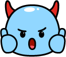

남은 계면이
7 / 7
MISSION 1
남은 시간
40초
손을 카메라 앞에 보여주세요 ✋
아기 피부에 장난꾸러기 계면이가 달라붙었어요!
이슬로 베이비로 나쁜 계면이를 모두 씻어내요!
손 또는 제품 드래그로 거품을 만들어요

나쁜 계면이를 모두 씻어냈어요!
이슬로 베이비와 함께 순하게 클린!
📸 직원에게 화면을 보여주세요
시간이 다 됐어요.
다시 한 번 도전해볼까요?